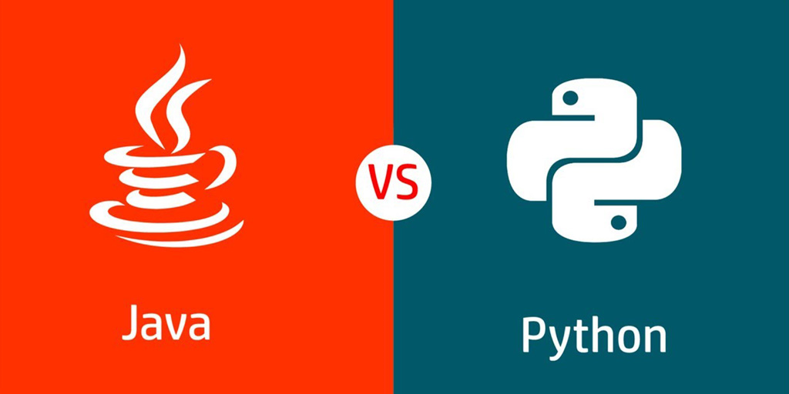
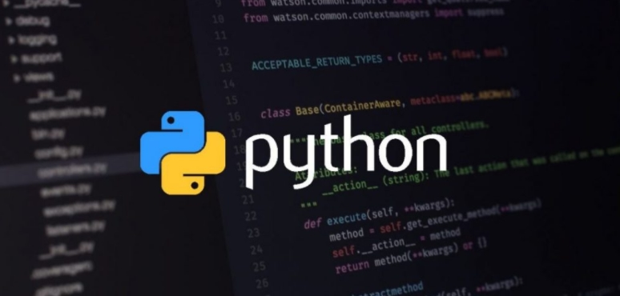
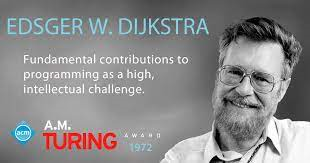

Quem está por trás das principais linguagens de programação?
As mentes mais importantes para as linguagens...
Quem está por trás das principais linguagens de programação?
As mentes mais importantes para as linguagens...
Java supera Python na classificação de linguagem de programação da Tiobe
Java supera Python por 0,14% de diferença...
Top 10 linguagens de programação mais usadas no mercado
Para você ficar por dentros das principais linguagens...
JavaScript se consolida como a linguagem de programação mais popular
Linguagem entra cada vez mais em destaque...
Qual a diferença de Arquitetura e Engenharia de software?
Você já ouviu dizer que Arquitetura de software é um conceito usado pela Engenharia de software?...
Criadora o termo "Engenharia de Software"
Engenharia de software é uma área da engenharia e da computação voltada à especificação, desenvolvimento, manutenção e criação de software...
Engenharia de Software
Novas forma de atender consultas de forma remota por videoconferência aonde com o avanço da tecnologia pode-se fazer diagnósticos com Inteligência Artificial , Receitas eletrônicas e Entrega de medicamentos sem contato físico...
Quem criou a Arquitetura de Software?
A origem da arquitetura de software como um conceito foi primeiramente identificado no trabalho de pesquisa de Edsger Dijkstra em 1968 e David Parnas no início de 1970.
Arquitetura de Software
O estilo arquitetural considera o sistema por completo, permitindo o engenheiro ou arquiteto de software determinar como o sistema está organizado, ...
Rede
Promete processar até 20gbps de velocidade tendo latência de entre 1 e 2 milissegundos...
Home Office
Com o avanço da pandemia do COVID-19 suregem novos métodos de trabalho, reuniões de forma remota...
Telemedicina
Novas forma de atender consultas de forma remota por videoconferência aonde com o avanço da tecnologia pode-se fazer diagnósticos com Inteligência Artificial , Receitas eletrônicas e Entrega de medicamentos sem contato físico...
Tecnologias em perícias
Em desenvolvimento mas já a ser testado, as tecnologias usadas para perícias criminais prometem não só recuperar dados excluídos e invadir bloqueios e criptografias como também revelar rapidamente as digitais e material genético com mais eficiência
O impacto da tecnologia e o avanço que ela pode causar

Com novas tecnologias vindo o perigo vem dobrado com possíveis usos ilícitos da tecnologia a partir do momento em que tudo pode estar conectado a internet...
Entregas Drop Off
Outra forma desenvolvida em meio a pandemia é as entregas sem contato a qual você consegue fazer entregas sem estar próximo da pessoa evitando contato, aonde está em testes entregas feitas com drones...
Web API > Notícias
Foi liberado a API Java para RESTful Web Services JAX-RS 2.1, com suporte à eventos server-sent, JSON-B, suporte para o JSON-P melhorado, e uma extensão reativa ...